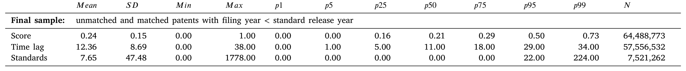
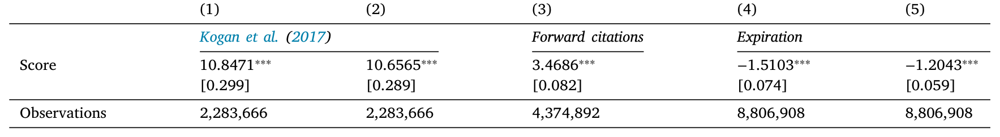
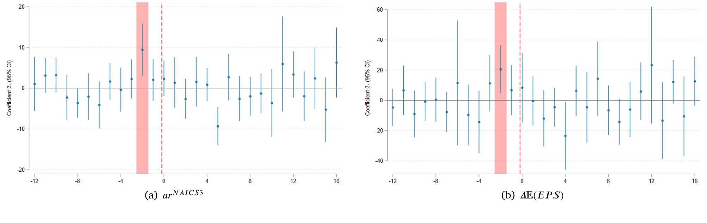
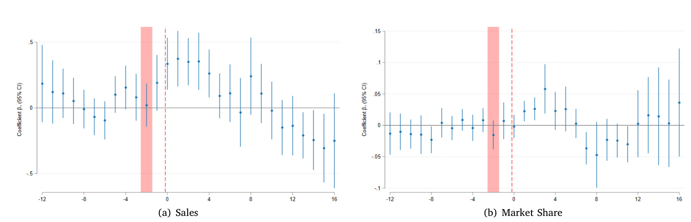
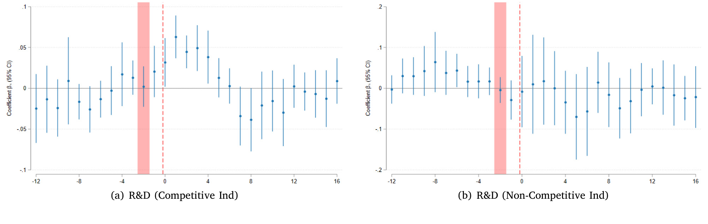
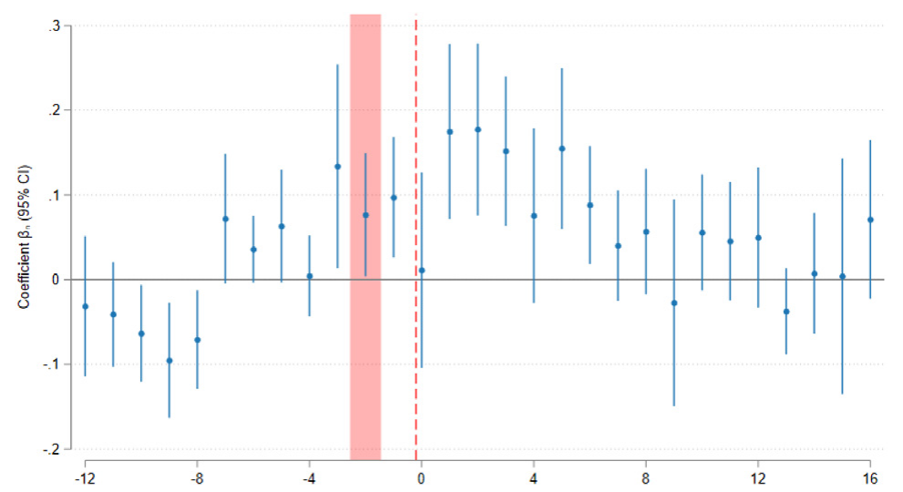
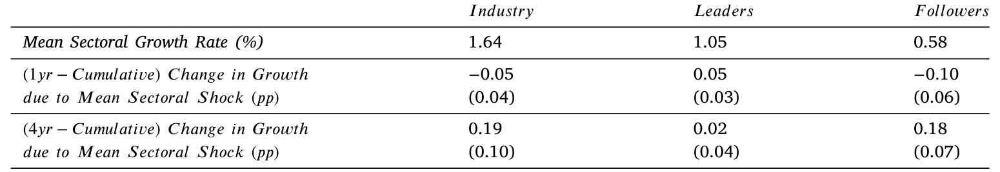
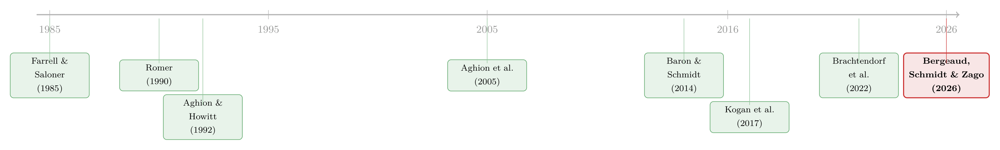

谁的专利，配得上新标准？——标准化如何在竞争、创新与增长之间走钢丝
本文我读的是 Bergeaud, Schmidt & Zago (2026, Journal of Financial Economics)。他们用文本挖掘把 7.5 百万件美国专利逐一比对到 0.65 百万份技术标准上，构造出一个「企业与新标准有多近」的度量。核心结论可以浓缩成一句话：当一项技术被选为新标准，离它最近的企业会短暂地拿到竞争优势——销售额与市场份额上升约 2.0%、若身处竞争性市场还会多投 4.8% 的研发；但这份优势注定短命，因为标准恰恰为所有人铺好了一块共同的技术地基，让追随者得以追赶，最终把整个行业的增长推上去。
1 引言：一份文件，凭什么决定谁赢
我们生活在一个被标准（standard）包裹的世界里。从支付系统到门框尺寸，从自动驾驶到 5G 通信，工业社会的每一个角落都依赖技术标准来保证设备的互操作性、输入品的兼容性、以及产品的安全与质量。标准看上去枯燥、技术、不起眼，但它做的其实是一件极有分量的事：在众多相互竞争的技术里，挑出一个，让全行业都向它对齐。
这里就藏着一个由来已久的张力。一旦某项技术被「钦定」为标准，那些早就在这条技术路线上深耕、手握相关专利的企业，便天然地更有能力去实现标准所描述的要求与流程。换句话说，它们会在标准发布的那一刻，凭空获得一种竞争优势，市场权力随之向它们倾斜。于是，一个古老的政策两难浮出水面：标准化究竟是在奖励成功的创新，还是在亲手制造垄断？
这并非空谈。产业组织（industrial organization, IO）领域早就为标准化的两面性吵了几十年。一面是它带来的互操作性、网络效应、更低的交易成本；另一面则是「锁定」（lock-in）的幽灵——QWERTY 键盘明明不如 DVORAK 高效，却因为习惯与兼容性被一代代沿用下来。更尖锐的担忧是：标准把整个行业锁进某项技术后，会不会把过多的市场权力，送给那些握有标准必要专利（standard-essential patents, SEPs）的少数公司？正因如此，标准制定组织（standard-setting organizations, SSOs）才反复强调 SEP 持有者要遵守「公平、合理、非歧视」（fair, reasonable and non-discriminatory, FRAND）的许可原则。
然而，IO 文献几乎只盯着 ICT（信息通信）这一个行业、只盯着「微观的标准如何被制定」，宏观经济学这边却长期对标准化视而不见。这篇论文要补的，正是这个洞：把标准化当作一次大规模技术采纳的事件，看它在企业层面与行业层面，究竟对竞争、创新和增长做了什么。
2 故事的起点：先得有一把尺，量出「谁离标准更近」
要回答上面的问题，首先要解决一个测量难题。我们既需要知道「哪些技术被整个行业采纳了」，又需要知道「单个企业的创新活动长什么样」。前者，作者用 SSO 批准的标准文件来刻画——这些文件描述了被选中技术的基本特征；后者，则用专利这一被广泛接受的企业创新度量（Hall et al., 2005）来刻画。
但真正关键的一步在于：怎么把这两类文档对应起来？ 作者的做法是做语义匹配（semantic matching）。每一份标准都被 Perinorm 的专家标注了一组关键词，而每一件专利都有摘要。作者先用文本挖掘的常规手段清洗文本——去大小写、去标点、去停用词，然后构造 k-gram（连续 \(k\) 个词构成的一个整体，比如 air condition 不等于分开的 air 和 condition），再做词干提取（stemming，让 fertilizing 和 fertilizer 都归到词根 fertiliz）。每个 k-gram 按逆文档频率（inverse document frequency, idf）赋权——越罕见的词权重越高；并把出现在超过 1/500 标准或 1/1000 专利里的过于常见的 k-gram 直接丢掉。
于是，标准 \(i\) 和专利 \(j\) 各自变成了一个 k-gram 权重向量。两者的邻近度，就用最朴素也最经典的余弦相似度（cosine similarity）来度量：
直觉很清楚：两份文档在「稀有而重要的词」上重合得越多，余弦值越接近 1，专利离标准就越近。把企业旗下所有专利的得分聚合到「企业–季度」层面，就得到了本文的主角——企业对新技术标准的邻近度。这个度量的工程量不小：作者把 7.5 百万件 1980–2010 年间申请的美国专利，连到了约 0.65 百万份标准上。

Table 1: Descriptive statistics of the matching procedure.
值得强调的是，这把尺的新意在于它的「全覆盖」。已有文献要么只用专利数据量企业创新（Griliches, 1990; Hall et al., 2005），要么只用标准数据量行业层面的技术采纳（Baron & Schmidt, 2014），而本文第一次把两者在语义层面缝在了一起；而且它不局限于 ICT，覆盖了经济的所有部门，也不局限于「申报的」标准必要专利，而是把所有「表明企业在该领域有知识与专长」的专利都纳入进来。
3 一个自然的问题：这把尺，量到的是「质量」还是「噪声」？
有了尺，接着的问题是：它量出来的东西可信吗？万一邻近度高，只是因为某项技术早就被全行业用烂了（事后才被追认为标准），那它捕捉的就只是「成功的创新」，而不是「标准化的额外冲击」。
作者用了两类验证。
第一类是「这把尺与已知的专利价值相关吗」。结果是：邻近度与专利的经济价值（按 Kogan et al., 2017 的市场反应法度量）、科学价值（前向引用数）、私人价值（专利持有人更愿意续费）都正相关。但更重要的是，它还超出了这些属性——在技术可比、质量相近的专利之间，它进一步识别出那些「更适合适配新标准定义」的专利。

Table 3: Regression results for financial, scientific and private patent value.
第二类验证更巧妙，也更说明问题：作者直接去看股票市场的反应。如果邻近度真的有信息含量，那么标准一公布，离它近的企业应当被市场重新定价。结果正是如此——标准发布后，金融市场会上调对邻近企业的盈利预期，这些企业在同一时间窗口出现显著的异常收益（abnormal returns）。
这里出现了一个非常有意思的反转。企业的专利组合早就是公开信息，理论上市场应该在专利授权时就消化掉了。可市场偏偏只在标准发布的那一刻才反应。这说明什么？说明标准的「具体内容」、以及由此决定的「每家企业离它有多近」，对市场是个惊喜。换言之，尽管标准制定本身是内生的，标准的正式批准仍然是企业能够部署、规模化、商业化其创新的必要一步——市场正是在这一刻，才把邻近企业的增长机会重新贴现进价格里（关于市场如何为未来现金流定价、贴现率为何是资产定价的中心议题，可参见《贴现率：资产定价的中心议题》）。

Figure 2: Technological proximity and financial markets’ reaction.
4 核心结果：短暂的赢家，与一条倒 U 形的曲线
验证通过，故事进入正题。作者用 Kogan et al. (2017) 的对照表，把专利层面的邻近度连到 Compustat、CRSP、IBES 的企业季度数据上，于是可以追踪：标准发布后，那些「离标准近」的企业，到底发生了什么。
第一个结果干净利落：只有在标准正式公布之后，邻近企业才在销售额和市场份额上获益——这些效应事先没有被预期到，且大约持续 5 个连续季度。平均而言，这意味着销售额与市场份额上升约 2.0%。

Figure 3: Technological proximity, sales and market share.
但真正精彩的是第二个结果，它把这篇论文和竞争–创新这条大文献接上了头。作者去看标准发布后企业的研发（R&D）投资如何变化，发现答案取决于市场结构：如果一家邻近企业身处竞争性市场，它会在标准发布后增加研发；如果它身处非竞争性市场，反而会减少研发。这正是 Aghion et al. (2005) 那条著名的「倒 U 形」（inverted-U）关系——竞争既可能抑制创新（侵蚀未来租金），也可能逼着企业加大创新去「逃离竞争」（escape competition）。就整个样本而言，扩张研发是占主导的那一面：平均来看，邻近企业的创新投入上升约 4.8%。

Figure 4: Technological proximity and R&D.
把这两块拼起来，作者给了一个统一的解读：标准的发布，本质上是一次短期的、向技术领先者倾斜的竞争格局变动。 那些早有准备、能立刻采纳并部署标准化技术的企业，短暂地拿到了市场权力。
5 反转：优势为何注定短命，以及增长从哪里来
如果故事到此为止，那它讲的就是一个「标准制造垄断」的悲观寓言。但论文最关键的一笔恰恰在这里反转：这份优势不是永久的。 标准化的本意，从来不是把市场锁给少数赢家，而是搭建一个共同的技术框架，让行业里的其他人能借助溢出效应（spillovers）逐步追上来。
作者用两个证据钉死了这个「追赶」机制。其一，标准发布后，其他企业引用领先企业专利的次数显著上升——知识在扩散。其二，行业里新产出的专利，在内容上越来越向刚刚发布的那份标准收敛（convergence）。换句话说，标准为所有人提供了一张共同的技术地图，追随者照着图就能补课。

Figure 6: Patent citations from followers.
于是宏观的图景出现了：标准引入四年之后，作者观察到行业层面的增长上升了约 0.2 个百分点，而且这个增长主要由全行业的追赶过程驱动。更值得玩味的是，行业集中度在长期不升反降——也就是说，标准化在长期非但没有固化垄断，反而促进了竞争。这与那一支强调「技术落后者的追赶对增长至关重要」的理论文献（Acemoglu et al., 2012）正好对得上。

Table 4: Aggregate effects on growth.
至此，全文围绕的那一个核心终于讲透：标准化是一次「先集中、后扩散」的过程。 短期里它给领先者一份温和而短暂的奖励（约 2.0% 的销售、4.8% 的研发），长期里它把技术变成公共品，让追随者追赶、让集中度下降、让增长上升（四年后 +0.2 个百分点）。奖励创新与防止垄断这对老冤家，在这里达成了一种动态的和解。
6 文献脉络：从「创造性破坏」到「把专利贴到标准上」
要理解这篇论文站在哪里，得先把它脚下的这条河看清楚。
源头是内生增长理论。Romer (1990) 把技术进步内生化，奠定了「创新驱动增长」的范式；Aghion & Howitt (1992) 进一步用「创造性破坏」（creative destruction）把竞争、淘汰与增长串了起来。但理论给出的「竞争越强、创新越弱」的简单预测，在数据里并不成立——直到 Aghion et al. (2005) 用「倒 U 形」关系把它救了回来：竞争与创新之间是非单调的。本文里「竞争性市场中邻近企业多投研发」的发现，正是这条线在标准化场景下的一次新验证。
与此并行的，是把专利当作创新度量的实证传统——Griliches (1990) 与 Hall et al. (2005) 是其中的路标，后者更把专利引用与市场价值连在了一起；而 Kogan et al. (2017) 提供的「用股价反应度量专利经济价值」的方法，被本文直接拿来做了校验的基准。在标准这一侧，Farrell & Saloner (1985) 等人奠定了标准化的 IO 分析（兼容性、网络效应、锁定），Lerner & Tirole (2015) 则把 SEP 与 FRAND 的规则设计问题理论化；Baron & Schmidt (2014) 第一次用标准发布的时点，去研究技术采纳的商业周期含义。

那么本文的位置呢？它最近的「邻居」是 Brachtendorf et al. (2022)——同样用文本挖掘把专利匹配到标准。但那篇只针对 ETSI 一个 SSO、只为评估专利的「标准必要性」。本文则把视野推到了全部 SSO、全部行业、全部专利，并且把落脚点从「专利是否必要」转向了一个更大的问题：标准化如何重塑真实世界里的竞争、创新与增长。 这正是它对宏观与金融文献的独特贡献。
7 我的判断：贡献、隐忧与下一步
先说贡献。这篇论文最漂亮的地方，是把一个看似纯粹「IO/微观」的现象（标准制定），用一把可扩展的语义尺子，提升成了一个能在企业层面和宏观层面同时检验的研究对象。「先集中、后扩散」这个统一叙事既自洽又有数据支撑，而股票市场「只在标准发布时才反应」的事实，更是为「标准发布是部署创新的必要一步」这一论断提供了干净的信息含量证据。
再说对识别的担忧。最大的威胁，作者自己也点了名：标准制定是内生的，企业可能游说 SSO 把自家专利塞进标准里（Bekkers et al., 2011; Farrell & Simcoe, 2012）。若如此，邻近度量到的就不是创新能力，而是游说能力。作者的应对相当扎实——用 SSO 成员数据控制企业的直接参与、剔除美国 SSO 制定的标准（美国企业在本土影响力更强）、并用「保持专利不变、随机打乱其与标准匹配得分」的反事实安慰剂（placebo）来证明效应不是来自专利组合规模或技术领域。安慰剂不显著，这一点很有说服力。但我仍想追问：被「成功游说进标准」的专利，和「真正技术领先」的专利，在语义上未必可分——余弦相似度高，可能恰恰是因为游说者照着自家专利的措辞去写标准关键词。这一层，现有检验未必能完全洗清。
另一个我会盯住的，是那个 0.2 个百分点的宏观增长效应。它是在行业–年份层面、用四年窗口估出来的，自由度有限、对竞争度的代理变量也敏感；它讲的故事很动人，但量级上的稳健性，我希望看到更多。
最后说下一步想看到什么。这篇论文几乎完全活在「股票 + 实物投资」的世界里。我最好奇的是它在信用市场的回声：当一家企业短暂地成为技术领先者、现金流前景被上调，它的公司债利差会不会收窄、其债券流动性会不会改善？而当追赶者反扑、领先优势消退，这些信用指标又会不会反向收敛？把这把「标准邻近度」的尺子接到 TRACE 与 FISD 上，应当是一条很自然、也很可行的延伸。
评论与延伸（Q&A + 研究方向）
几个可能的疑问
Q：这个「邻近度」和标准必要专利（SEP）到底有什么区别？
SEP 是法律/制度概念——某专利被申报为实施标准所「必须」用到的专利，且往往受 FRAND 约束。本文的邻近度是语义概念，覆盖所有专利，度量的是「这家企业在标准所涉领域是否有知识与专长」，而非法律上的必要性。所以它能用到全行业、全 SSO，而不像 SEP 研究那样被困在 ICT 与少数申报数据里。
Q：标准制定是企业游说的结果（内生的），那因果识别还可信吗？
这是核心威胁。作者的三道防线是：用 SSO 成员资格控制直接参与、剔除美国 SSO 标准、以及随机化匹配得分的安慰剂检验（安慰剂无效应）。此外，市场只在标准发布时反应、而非在专利早已公开时反应，也间接说明驱动力是标准内容本身而非纯粹的事前游说。但「照着自家专利去写标准措辞」这类精巧的内生性，仍难被完全排除。
Q：专利组合明明早就公开了，市场为什么偏要等到标准发布才反应？
因为标准发布才是那个「协调点」——它一锤定音地告诉所有人：众多竞争技术里，这一个赢了。在此之前，市场不知道哪条技术路线会被选中，也就无法判断哪家企业的专利真正值钱。标准的具体内容因此构成了信息惊喜，市场据此重新贴现邻近企业的增长机会。
Q：会不会邻近度高只是因为「专利多」或「恰好在某个技术领域」，而非专利质量？
作者专门做了反事实检验：保持企业的专利集合不变，只把这些专利与标准的匹配得分随机打乱，结果这些安慰剂度量产生不出任何效应。这说明驱动结果的是「专利内容与标准的真实贴合度」这一质量维度，而非组合规模或领域固定效应。
Q：优势只持续约 5 个季度、长期增长只有 +0.2pp，这是不是说标准化其实没什么用？
恰恰相反，这正是论文想讲的点。短期的领先者红利本来就该是温和而短暂的——如果它巨大且持久，那才说明标准制造了垄断。
2.0%的销售、5个季度的窗口，配上长期集中度下降、追赶驱动的0.2pp增长，描绘的是一个「奖励创新但不固化垄断」的良性过程。重点不在领先者赚了多少，而在追赶者最终补上了课。
Q：竞争与创新的「倒 U 形」在这篇论文里具体怎么体现？
体现在研发的异质反应上：身处竞争性市场的邻近企业，标准发布后增加研发（逃离竞争效应占上风）；身处非竞争性市场的邻近企业反而减少研发（租金侵蚀效应占上风）。全样本平均仍是净扩张，约
+4.8%。这与 Aghion et al. (2005) 的倒 U 形预测完全一致。
几个可能的研究问题与提案
1. 标准化冲击与公司债信用利差。 经济故事：当企业短暂成为技术领先者、现金流前景改善、违约风险下降，其公司债利差应当收窄；而当追赶者反扑、优势消退，利差又会反向收敛——这给「领先者 vs 追随者」提供了一个干净的横截面。可行性：中。所需数据：TRACE（债券成交）、Mergent FISD（债券特征），与本文公开的复制数据中的邻近度合并。识别：以标准发布为事件做事件研究，或在领先/追随企业间做双重差分（difference-in-differences, DiD）。
2. 标准邻近度与公司债流动性。 经济故事：成为技术领先者会带来更多关注、更低的信息不对称，可能改善其债券的二级市场流动性；反之追赶期信息环境趋同，流动性差异收窄。这与我自己关于外资持有人与公司债流动性的研究方向直接相关。可行性：中–高。数据：TRACE 计算 Amihud、买卖价差、Roll 等流动性指标，围绕标准发布窗口比较。识别：领先 vs 追随者的 DiD + 企业固定效应。
3. 标准化与企业现金持有。 经济故事：面对「短期租金 + 未来必被追上」的格局，领先企业是否会囤积现金以支撑后续研发？这能把标准化接到公司储蓄/预防性现金的文献上（可参见《为风险买单：企业为什么把现金存进高风险债券？》与《1.7 万亿美元的现金被解锁之后》）。可行性：高。数据：Compustat 现金/投资变量直接与邻近度合并即可。
4. 外资机构持有人是否偏好「贴近标准」的企业。 经济故事：外资机构在配置时，是否系统性地超配（或低配）技术领先、邻近标准的企业？若有，标准发布可能成为外资再平衡的触发点。可行性：中。数据：FactSet/13F 机构持仓 + 邻近度。识别：标准发布前后的持仓变动，注意区分「追逐已知质量」与「对标准内容的真实反应」。
5. 同一事件，股票与债券市场反应的差异。 经济故事：股权对增长机会反应为正，债券则同时受增长（利好）与风险（不确定）两种力量拉扯——比较两个市场对同一标准发布的反应，可揭示「标准红利」中有多少是真实价值、多少是风险重定价。可行性：中。数据：CRSP（股票）+ TRACE（债券）双边事件研究。
参考文献
Acemoglu, D., Gancia, G., Zilibotti, F. (2012). Competing engines of growth: Innovation and standardization. Journal of Economic Theory 147(2), 570–601.
Aghion, P., Bloom, N., Blundell, R., Griffith, R., Howitt, P. (2005). Competition and innovation: An inverted-U relationship. Quarterly Journal of Economics 120(2), 701–728.
Aghion, P., Howitt, P. (1992). A model of growth through creative destruction. Econometrica 60(2), 323–351.
Arts, S., Cassiman, B., Gomez, J.C. (2018). Text matching to measure patent similarity. Strategic Management Journal 39(1), 62–84.
Brachtendorf, L., Gaessler, F., Harhoff, D. (2022). Truly standard-essential patents? A semantics-based analysis. Journal of Economics & Management Strategy 32(1), 132–157.
Farrell, J., Saloner, G. (1985). Standardization, compatibility, and innovation. RAND Journal of Economics 16(1), 70–83.
Farrell, J., Simcoe, T. (2012). Choosing the rules for consensus standardization. RAND Journal of Economics 43(2), 235–252.
Griliches, Z. (1990). Patent statistics as economic indicators: A survey. Journal of Economic Literature 28(4), 1661–1707.
Hall, B.H., Jaffe, A., Trajtenberg, M. (2005). Market value and patent citations. RAND Journal of Economics 36(1), 16–38.
Kogan, L., Papanikolaou, D., Seru, A., Stoffman, N. (2017). Technological innovation, resource allocation, and growth. Quarterly Journal of Economics 132(2), 665–712.
Lerner, J., Tirole, J. (2015). Standard-essential patents. Journal of Political Economy 123(3), 547–586.
Romer, P.M. (1990). Endogenous technological change. Journal of Political Economy 98(5), S71–S102.